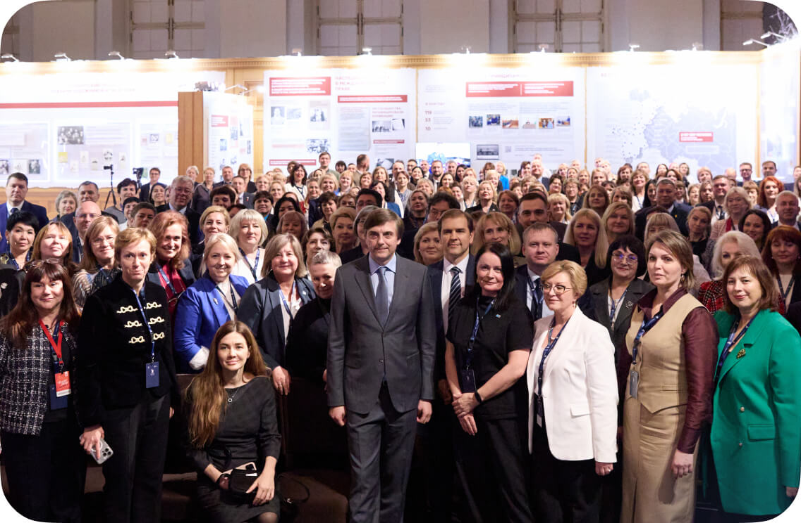
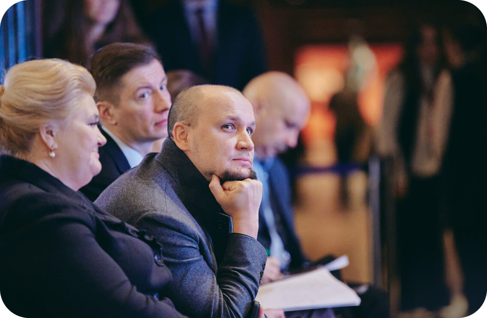
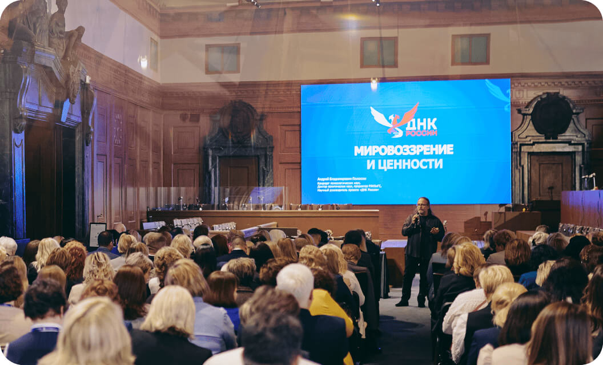

Здесь объединяются передовой управленческий опыт, аналитика данных ВСОКО и наставничество сильных директоров. Наша цель — предиктивно выявлять профессиональные дефициты каждого руководителя, выстраивать персональную программу развития (ИПР) и непрерывно сопровождать до устойчивого роста образовательных результатов.

Шесть взаимосвязанных этапов непрерывного профессионального цикла руководителя образовательной организации
Инструменты практической поддержки руководителей на каждом этапе карьеры
Короткие практико-ориентированные курсы (16–36 часов) для устранения адресных дефицитов
«Современная школа меняется стремительно. Управленец сегодня обязан не просто реагировать на предписания, а опережать вызовы: владеть аналитикой ВСОКО, безупречно вести финансовую деятельность и бережно вести за собой педагогическую команду.»
Проект реализуется при поддержке Министерства образования Кузбасса и в сетевом взаимодействии с ведущими университетами и научными центрами региона.